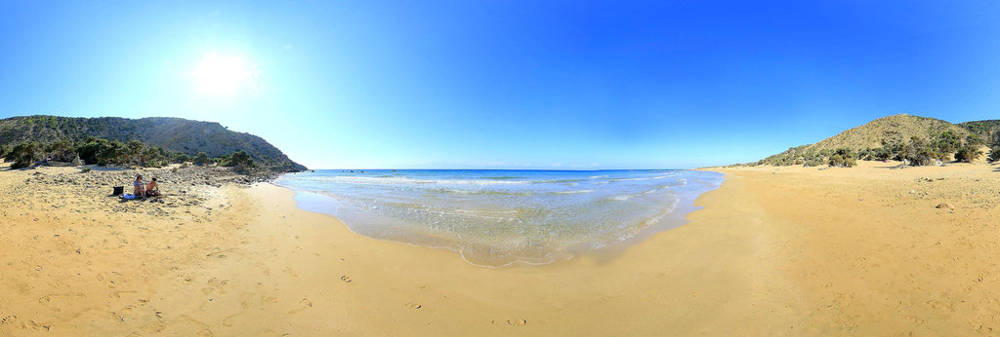
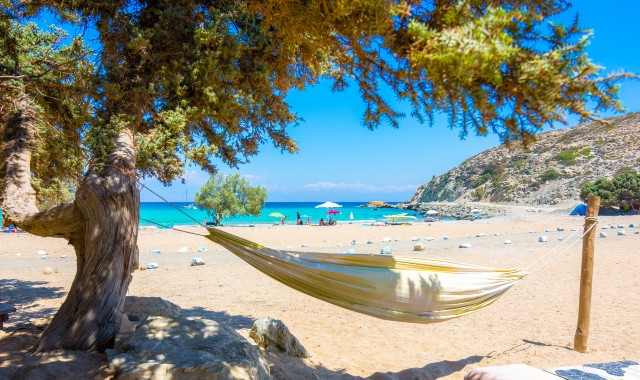
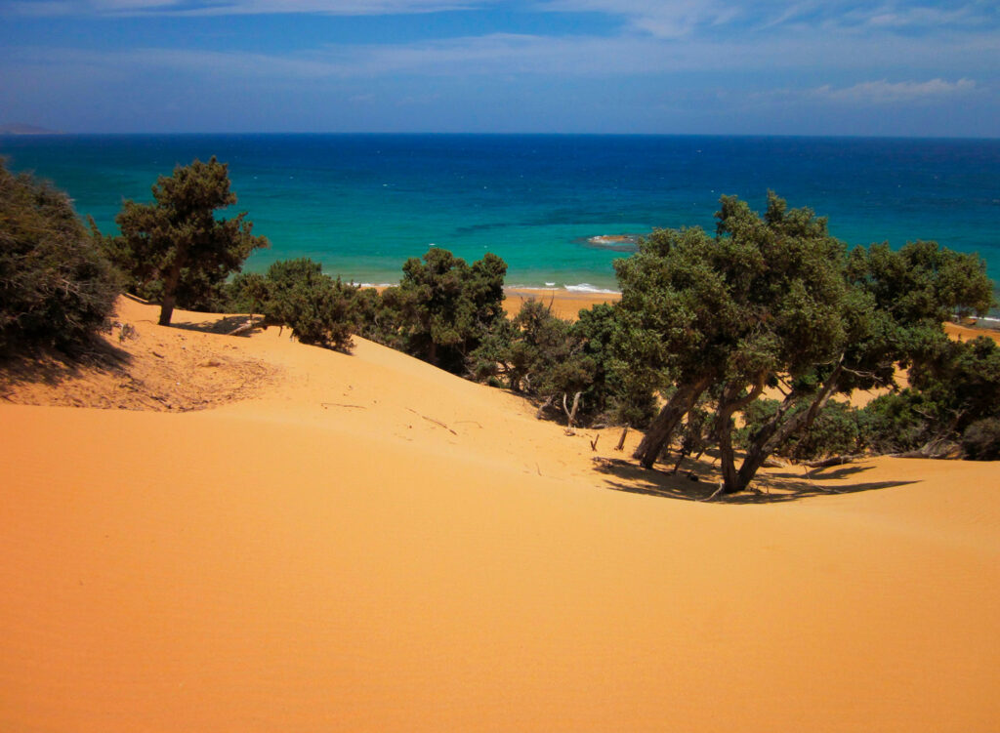
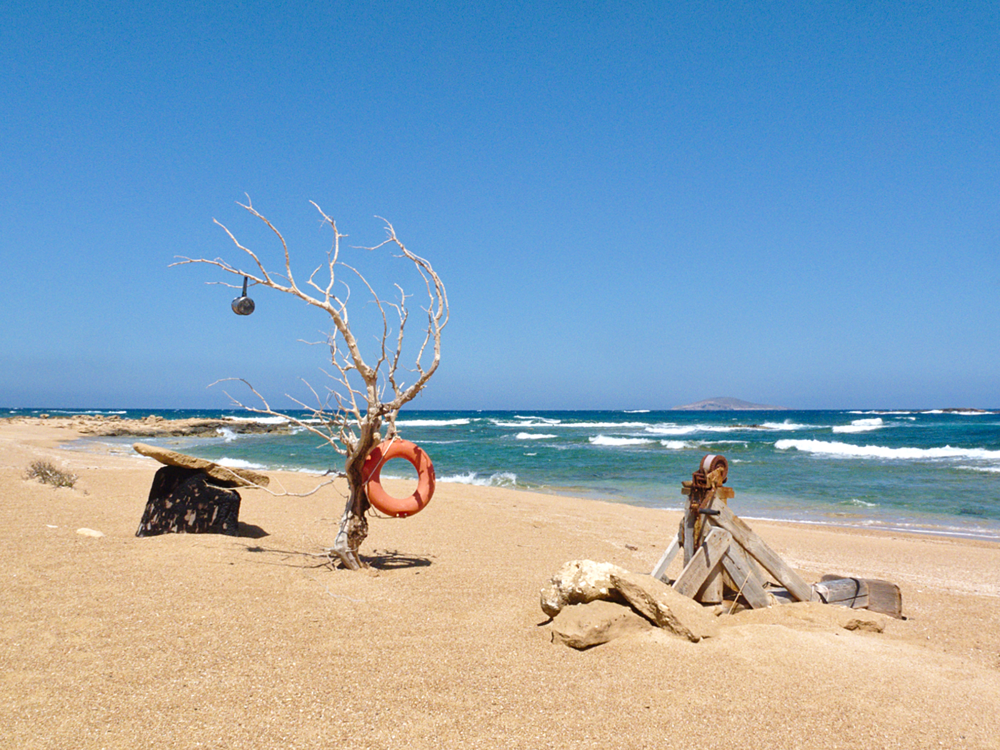
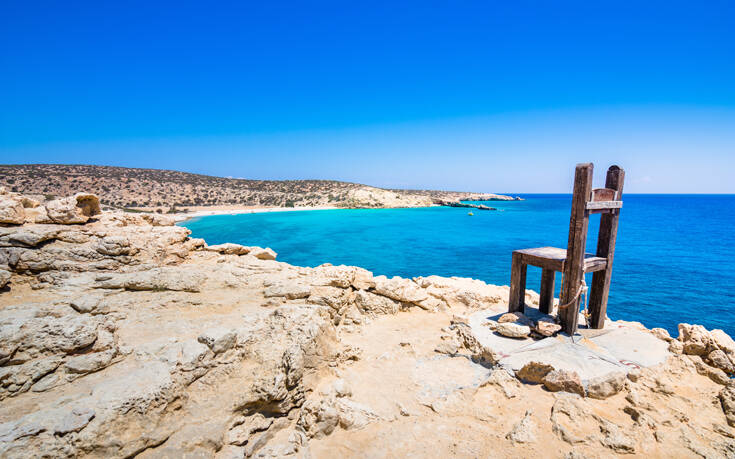

Gavdos Beach Guide

Gavdos island has some of the most beautiful beaches in the whole world. Pebbled or sandy they are all 100 %
natural with an African ambience.
Sarakiniko Beach
Sandy and beautiful, it is the most popular beach in Gavdos island. Non-organized located
2 km from Karabe port. Go by bus or on foot. Campers area providing basic facilities nearby.
Agios Ioannis Beach – or Agiannis
Sandy, non-organized, located 4 km from Sarakiniko Beach. One-hour hike
from Sarakiniko. You can go by bus as well. African-style beach ranked as second-most beautiful beach in the
world by the Discovery Channel.

Lavrakas Beach
Secluded beach on the northern coast of Gavdos, located 2 km from Agios Ioannis. About 30
min. walk from Agios Ioannis on foot. You can go most of the way by bus from the port, but Lavrakas beach
itself can only be accessed pm foot. Archaeologists have found several Minoan caves and remains of ancient
constructions in the area around Lavrakas Beach.

Tripiti Beach
The spectacular rock formations have given this spectacular beach its name. Unique arches
rise from the sea. Tripa in Greek means “hole”, and you can see three arches at the end of the formation.
The landmark of Gavdos is a giant chair standing on the top of the Tripiti formation. The chair is with its
inscription “southernmost point of Europe” a favourite spot for tourists. All have a picture taken with
their feet dangling from the edge of the continent.

Go to Overview page